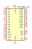
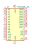
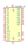
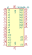
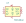

| Symbol |
Description |
47C04 | Description: 4kbit I2C serial EERAM, SRAM with EEPROM backup, 4.5-5.5V, DIP-8/SOIC-8/TSSOP-8
Keys: 4kb 5V I2C serial EERAM SRAM EEPROM
Datasheet: http://ww1.microchip.com/downloads/en/DeviceDoc/20005371C.pdf |
47C16 | Description: 16kbit I2C serial EERAM, SRAM with EEPROM backup, 4.5-5.5V, DIP-8/SOIC-8/TSSOP-8
Keys: 16kb 5V I2C serial EERAM SRAM EEPROM
Datasheet: http://ww1.microchip.com/downloads/en/DeviceDoc/20005371C.pdf |
47L04 | Description: 4kbit I2C serial EERAM, SRAM with EEPROM backup, 2.7-3.6V, DIP-8/SOIC-8/TSSOP-8
Keys: 4kb 3V I2C serial EERAM SRAM EEPROM
Datasheet: http://ww1.microchip.com/downloads/en/DeviceDoc/20005371C.pdf |
47L16 | Description: 16kbit I2C serial EERAM, SRAM with EEPROM backup, 2.7-3.6V, DIP-8/SOIC-8/TSSOP-8
Keys: 16kb 3V I2C serial EERAM SRAM EEPROM
Datasheet: http://ww1.microchip.com/downloads/en/DeviceDoc/20005371C.pdf |

FM1608B-SG | Description: 64Kb FRAM nonvolatile memory, SOIC-28
Keys: FRAM 5V Parallel
Datasheet: http://www.cypress.com/file/41731/download |

FM16W08-SG | Description: 64Kb FRAM nonvolatile memory, SOIC-28
Keys: FRAM 5V Parallel
Datasheet: http://www.cypress.com/file/41731/download |

FM1808B-SG | Description: 256k FRAM nonvolatile memory, SOIC-28
Keys: FRAM 5V Parallel
Datasheet: http://www.cypress.com/file/136521/download |

FM18W08-SG | Description: 256k FRAM nonvolatile memory, SOIC-28
Keys: FRAM 5V Parallel
Datasheet: http://www.cypress.com/file/136521/download |
FM24C64B | Description: 64Kb serial FRAM nonvolatile Memory, SOIC-8
Keys: FRAM I2C Serial 5V FRAM NVRAM
Datasheet: http://www.cypress.com/file/41651/download |

FM24C64C | Description: 64Kb serial FRAM nonvolatile Memory, SOIC-8
Keys: FRAM I2C Serial 5V FRAM NVRAM
Datasheet: http://www.cypress.com/file/41651/download |
MB85RS128B | Description: FRAM memory with SPI interface, SOIC-8 SON-8
Keys: FRAM SPI 3.3V
Datasheet: http://www.fujitsu.com/downloads/MICRO/fsa/pdf/products/memory/fram/MB85RS16-DS501-00014-6v0-E.pdf |
MB85RS16 | Description: FRAM memory with SPI interface, SOIC-8 SON-8
Keys: FRAM SPI 3.3V
Datasheet: http://www.fujitsu.com/downloads/MICRO/fsa/pdf/products/memory/fram/MB85RS16-DS501-00014-6v0-E.pdf |
MB85RS1MT | Description: FRAM memory with SPI interface, SOIC-8 SON-8
Keys: FRAM SPI 3.3V
Datasheet: http://www.fujitsu.com/downloads/MICRO/fsa/pdf/products/memory/fram/MB85RS16-DS501-00014-6v0-E.pdf |
MB85RS256B | Description: FRAM memory with SPI interface, SOIC-8 SON-8
Keys: FRAM SPI 3.3V
Datasheet: http://www.fujitsu.com/downloads/MICRO/fsa/pdf/products/memory/fram/MB85RS16-DS501-00014-6v0-E.pdf |
MB85RS2MT | Description: FRAM memory with SPI interface, SOIC-8 SON-8
Keys: FRAM SPI 3.3V
Datasheet: http://www.fujitsu.com/downloads/MICRO/fsa/pdf/products/memory/fram/MB85RS16-DS501-00014-6v0-E.pdf |
MB85RS512T | Description: FRAM memory with SPI interface, SOIC-8 SON-8
Keys: FRAM SPI 3.3V
Datasheet: http://www.fujitsu.com/downloads/MICRO/fsa/pdf/products/memory/fram/MB85RS16-DS501-00014-6v0-E.pdf |
MB85RS64 | Description: FRAM memory with SPI interface, SOIC-8 SON-8
Keys: FRAM SPI 3.3V
Datasheet: http://www.fujitsu.com/downloads/MICRO/fme/fram/datasheet-MB85RS64.pdf |
MR20H40 | Description: 4Mb MRAM memory with SPI interface, DFN-8
Keys: MRAM SPI EEPROM 3.3V
Datasheet: https://www.everspin.com/file/217/download |
MR25H40 | Description: 4Mb MRAM memory with SPI interface, DFN-8
Keys: MRAM SPI EEPROM 3.3V
Datasheet: https://www.everspin.com/file/217/download |